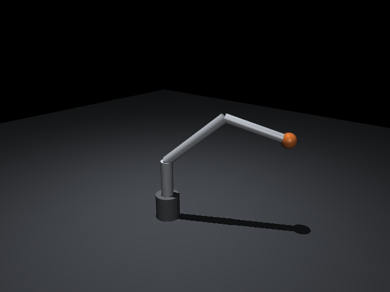
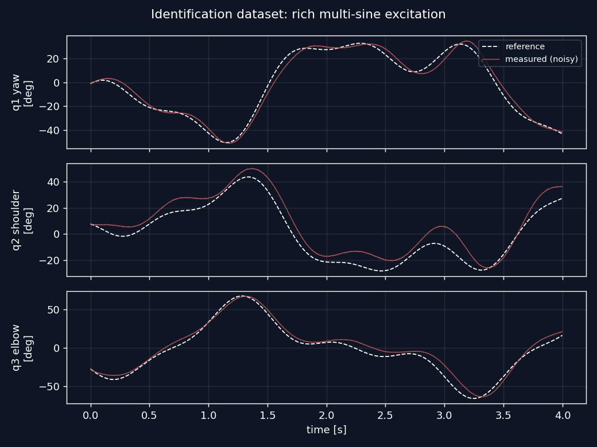
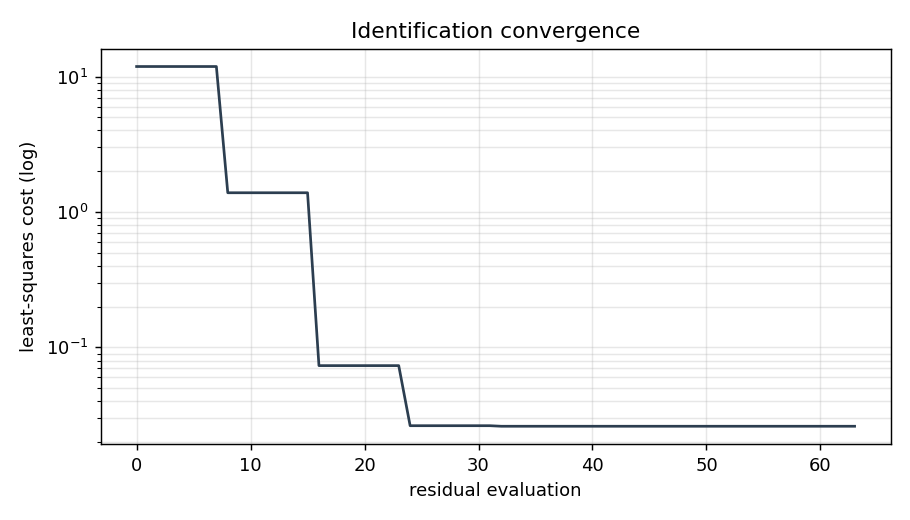
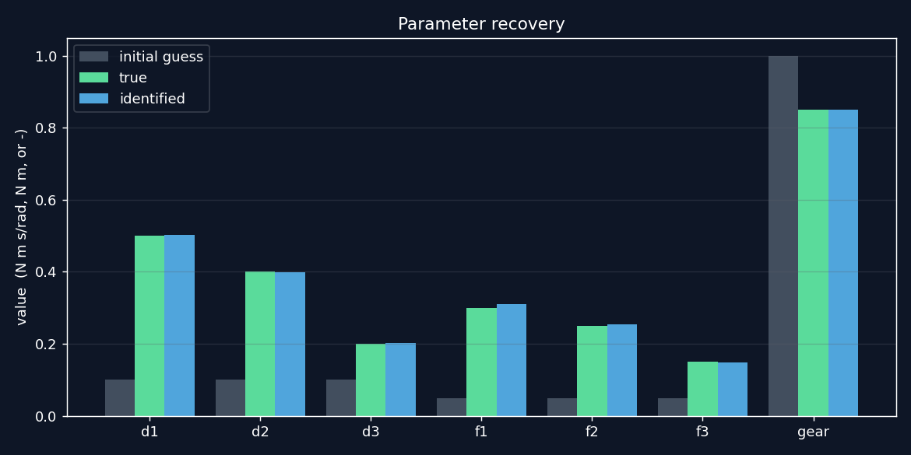
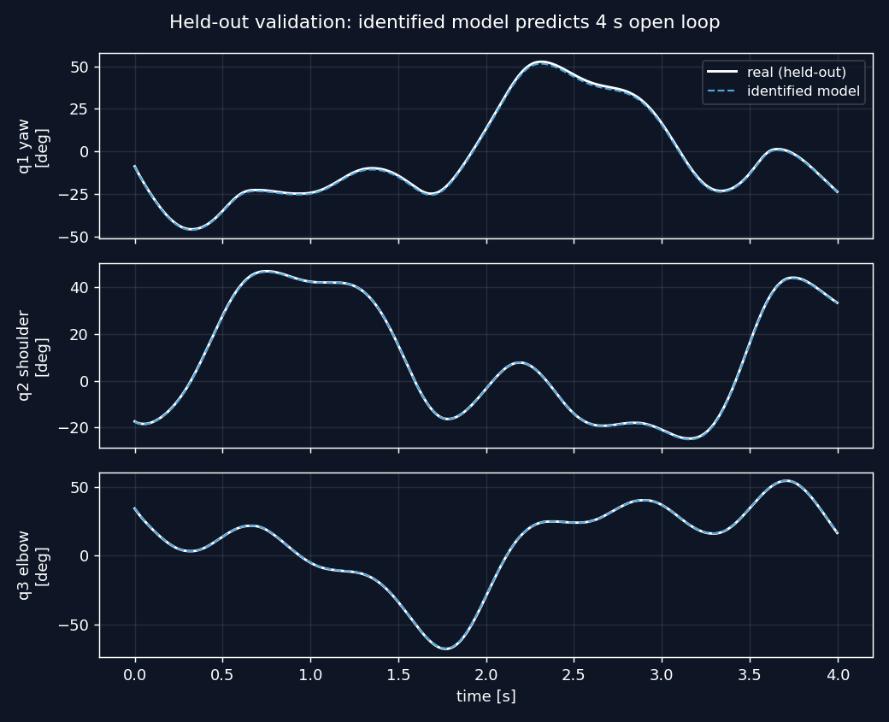
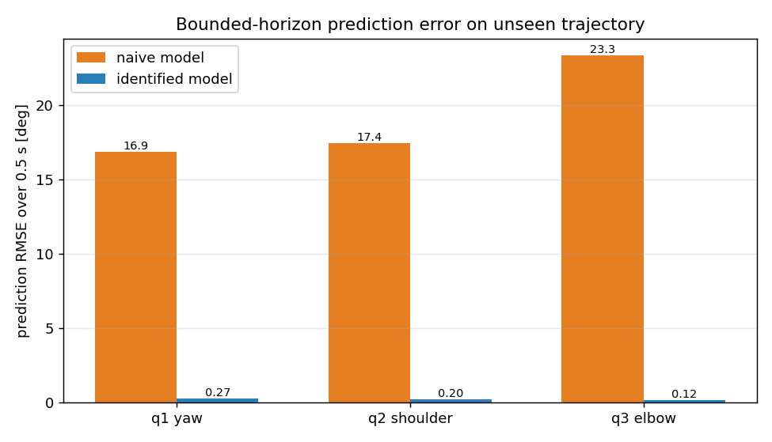

7
PARAMETERS IDENTIFIED
Build an arm whose dynamics are right for the right reasons, then recover what no drawing lists: friction, damping, and the true motor torque constant, from data alone. Validate on motion the fit never saw.
A simulator is only as trustworthy as the numbers inside it. Two kinds of numbers matter. The first is mass properties, which you can compute exactly from geometry and material. The second is contact-level parameters like joint friction and damping, and the real torque constant of the drive, which never appear on a drawing and have to be measured. This project does both: it builds the model correctly from the start, then identifies the rest from data and proves the result out of sample.
The arm is a 3-DOF manipulator: a yaw joint at the base, then shoulder and elbow pitch joints, with a 0.5 kg payload at the tip. Each link is a hollow aluminum tube. Rather than approximate the links with primitives and let the simulator guess, the inertia tensor of every link is computed analytically from its wall geometry and the density of 6061 aluminum, then rotated into the body frame and written straight into the MJCF.
This is the discipline of a mechanical designer carried into the place it actually changes the physics. In a static CAD model the inertia tensor is metadata. In a dynamics simulation it sets how every joint accelerates, so getting it right from geometry removes a whole class of sim-to-real error before any tuning starts.

To identify parameters you need motion that stirs all of them. Each joint is driven with a multi-sine torque, a sum of sinusoids at different frequencies and phases, which excites the arm across a broad band without dwelling at any single resonance. The simulation logs joint positions, velocities, and applied torques, and measurement noise is added to the recorded angles so the identification faces a realistic signal rather than clean truth.

Seven parameters are unknown: damping and dry friction at each of the three joints, plus a single scale on the motor torque constant. They are recovered by multiple shooting. The trajectory is split into short windows, the model is integrated across each window, and a nonlinear least-squares solver adjusts all seven parameters at once to make the simulated windows match the measured data. Multiple shooting keeps the optimization well conditioned over long trajectories where a single long rollout would drift and stall.
The solver starts from a deliberately naive guess, uniform damping and friction and a motor gain of 1.0, so the recovery is honest about starting far from the answer.


Matching the data you fit on proves very little. The identified model is tested on a completely separate trajectory, generated with different excitation frequencies and phases and a different noise seed, and run fully open loop with no correction. A model that only memorized the training motion falls apart here. This one tracks the real arm across all three joints for the length of the run.


| Joint | Naive RMSE | Identified RMSE | Reduction |
|---|---|---|---|
| Yaw | 16.9° | 0.27° | 98.4% |
| Shoulder | 17.4° | 0.20° | 98.8% |
| Elbow | 23.3° | 0.12° | 99.5% |
The simulation is wrapped in an rclpy node so it behaves like a hardware interface. It subscribes to a torque-command topic, steps the physics, and publishes joint states and a clock. That makes the identified model a drop-in target for a ROS2 control stack: the same node that talks to a real arm can talk to this one.
The bridge follows standard ROS2 Humble patterns and is meant to run on a machine with ROS2 installed. It is included as src/ros2_bridge.py with a run recipe in its header.
pip install mujoco numpy scipy matplotlib
python src/inertia.py # mass-properties report
python src/build_arm.py # generate the MJCF
MUJOCO_GL=egl python src/system_id.py # identify, validate, plotAll numerical results and figures regenerate headless. Only the rendered arm image needs a GL backend.